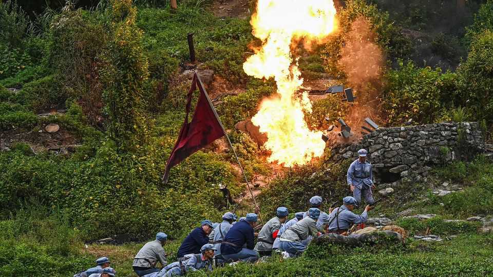

China wants to revive the spirit of the Long March
That means keeping in lockstep with Xi Jinping

Oct 22nd 2026
It is a story of “perseverance, solidarity and hope”. So claims an English-language documentary released by China’s state media this month to mark the 90th anniversary of the official end of the Long March: the famously gruelling retreat by embattled Communists during China’s civil war. The two foreign presenters of the series retrace small sections of the thousands of miles the Communist Party covered, spouting platitudes along the way. “Not only did we see history, we also saw the future,” says one, marvelling at the skyscrapers and data centres that have sprouted in the once-remote regions the Red Army marched through. “There will always be people marching on the road to hope,” sighs the other, in the last episode.
Some may find this more than a little mushy. Luckily China released a second and more interesting documentary on the Long March this month, intended for domestic audiences. Called “The Great Expedition”, it was co-produced by China’s armed forces and broadcast to much fanfare on state television. It also celebrates China’s modernisation since the dark days of the 1930s. But it makes this point with muscular footage of tanks, missiles and helicopters. And the documentary’s takeaway is less guff about hope and more about the need for absolute loyalty to the party and its leader.
A central focus of “The Great Expedition” is Mao Zedong and his clashes with other Communists along the Long March, like Bo Gu, a Soviet-trained revolutionary, Otto Braun, a German adviser, and Zhang Guotao, a rival general. They had various disagreements with Mao over military strategy. But as the documentary relates with some relish, Mao was proved correct again and again. Bo and Braun were stripped of their command early in 1935; a little later Zhang dared to set up his own Central Committee (the party’s governing body) and led his troops in a different direction from the one suggested by Mao. Zhang was humiliated after a catastrophic battle; the documentary camera pans out over the graves of his soldiers.
On social media, one enthusiastic reviewer summarised the key message: “When you’re unsure what to do, look to Mao; when you encounter difficulties, look to him again.” The implication for today’s party members is pretty clear. Footage of Mao’s successor, Xi Jinping, appears in the first few minutes of every episode. The documentary should, according to state media, “guide and inspire the entire party and the entire army…to unite more closely around the Central Committee with comrade Xi Jinping at its core”.
Many of the party’s 100m members will watch “The Great Expedition”, if they know what is good for them. It has been put on a party app called Xuexi Qiangguo, which means both “Study the Strong Country” and “Study Xi to Make the Country Strong”. Party members’ usage of the app is tracked; they must log in daily. Soldiers, especially, should be keen viewers. Scores of generals have been purged in recent years for disloyalty. As Mr Xi has said: “Each generation has its own Long March.” Everyone should stay in step on his.■
Subscribers can sign up to Drum Tower, our new weekly newsletter, to understand what the world makes of China—and what China makes of the world.